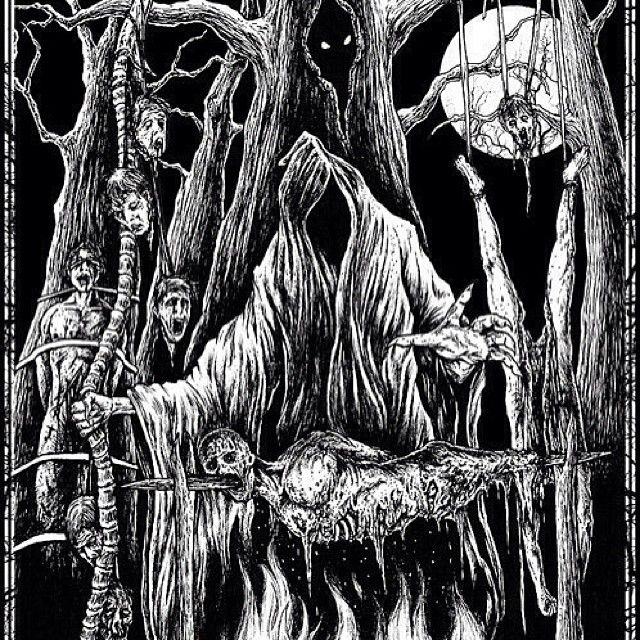

Que es el DeathCore
El deathcore es un género musical que combina elementos del death metal y del hardcore punk. Se caracteriza por tener voces guturales extremas, ritmos rápidos y pesados, así como cambios de tempo abruptos. Las letras a menudo tratan temas oscuros y violentos. El deathcore se distingue por su enfoque en la brutalidad y la agresión, y es popular en la escena del metal extremo. Algunas bandas destacadas en el género incluyen Suicide Silence, Whitechapel y Carnifex.
El arte del DeathCore
El arte de las bandas de deathcore, al igual que su música, suele reflejar temas oscuros, agresivos y a veces perturbadores.

Caracteristicas del Genero
El deathcore es un género musical que se caracteriza por combinar elementos del death metal y del hardcore punk.
- Voces guturales extremas: El deathcore se destaca por el uso de voces guturales profundas y agresivas.
- Ritmos potentes y pesados: La música en el deathcore se caracteriza por ritmos intensos y pesados.
- Breakdowns impactantes: Los breakdowns son secciones en las que la música se ralentiza drásticamente, a menudo con un patrón de batería repetitivo y fuerte.
- Letras agresivas y temáticas oscuras: Las letras del deathcore a menudo tratan temas oscuros, violentos y a veces controversiales.
- Técnica instrumental avanzada: El deathcore a menudo presenta una alta dosis de técnica instrumental.
- Producción potente y nítida: La producción en el deathcore tiende a ser muy pulida y potente, lo que resalta la intensidad y la agresión de la música.